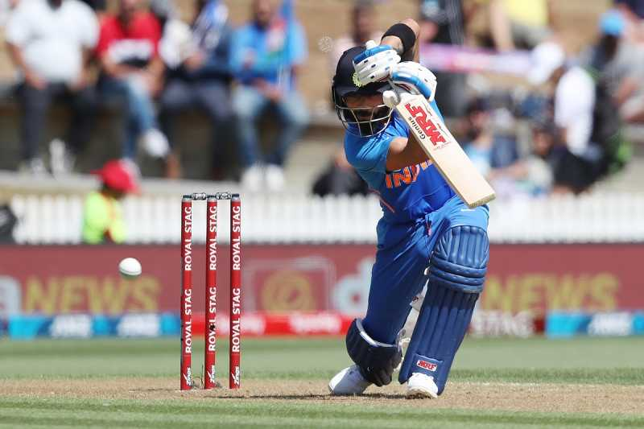
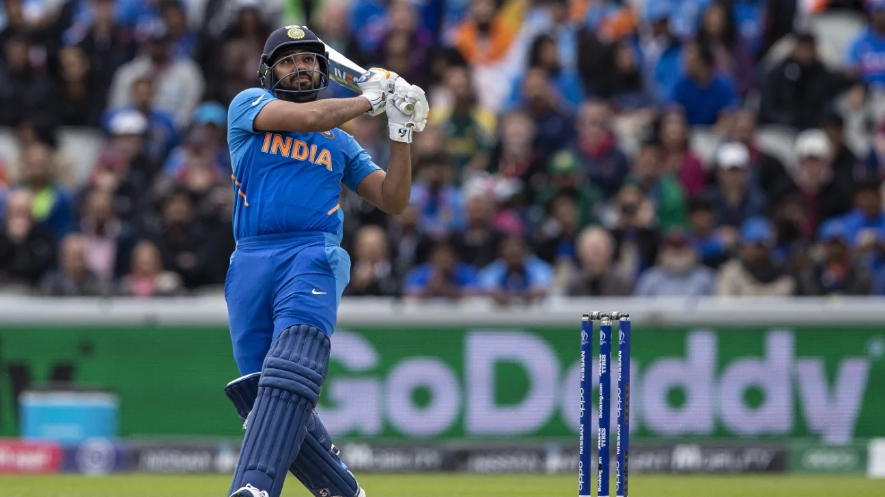
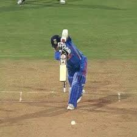
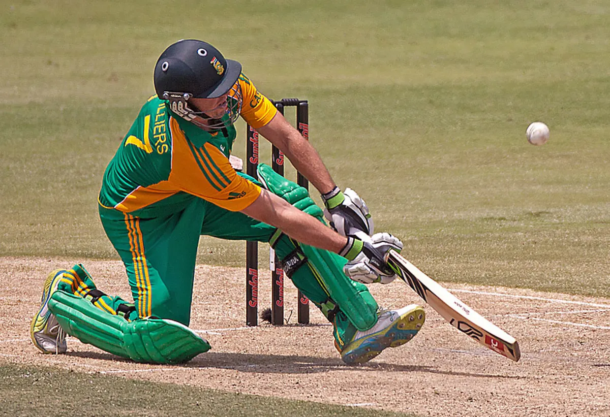

03 — SHOTS

CRICKET SHOTS
Cricket shots are the techniques used by batsmen to score runs and control the game.Each shot is played based on the line, length, and speed of the delivery. From elegant drives to powerful pulls and sweeps, every shot requires timing, precision, and skill.Mastering different shots allows a player to adapt to various match situations and field placements.

COVER DRIVE
-Classical Shot

PULL SHOT
-Elegant Shot
CUT SHOT
-Timing Shot

STRAIGHT DRIVE
-Classic Drive

SCOOP SHOT
-Cheeky Shot